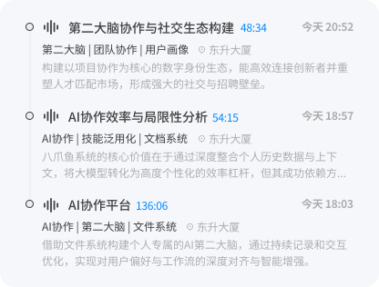
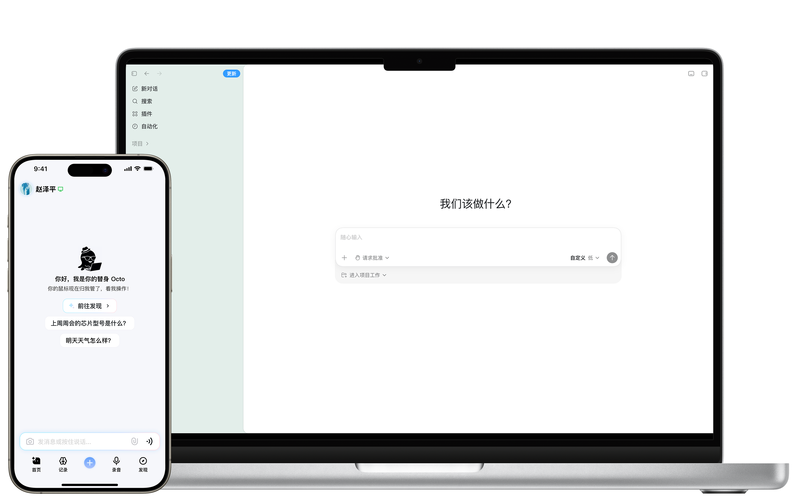

每次查找都需要翻遍不同应用？记录、整理、找回，现在它们是一件事
不限格式，不用切换。微信里敲定的方案、随手拍的白板、一段语音、一份文档，丢进来，Octopus 都能收

不依赖关键词检索，直接映射信息间的关联：持续学习你的行为模式与表达习惯，在你需要时，随时推荐
从手机到电脑，从路上到桌前，不挑屏幕，不分设备，动动手指，电脑替你干活。手机记的，电脑无缝继续用

东西默认都存在你自己的设备上,只有你允许的内容才会同步。没有"上传"这个默认动作,就没有意外的泄露。
Octopus 把消息、语音、文件、屏幕和常用工具整理成连续的个人上下文，并支持在此基础上开发定制各种工具、生态